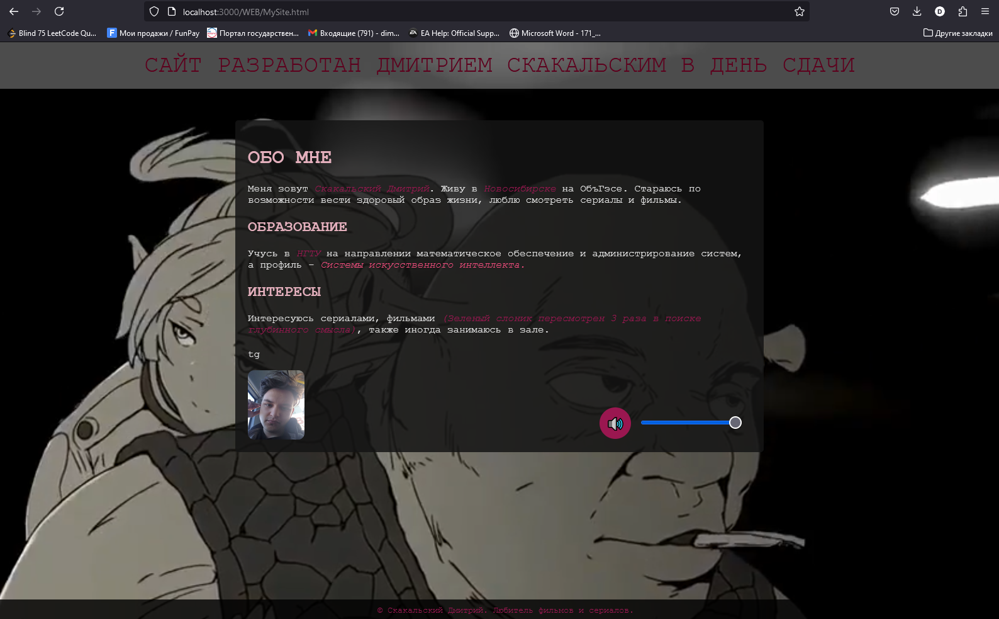

Лабораторная работа №2
Дисциплина: Основы web-программирования
Задание: Верстка
Факультет: ФПМИ
Группа: ПМИ-22
Студент: Скакальский Дмитрий
Преподаватель: Цыгулин А.А.
Год: 2024
Цель работы
Познакомиться со структурой HTML-документа, создать страничку со своей презентацией, проявить творческий подход.
Ход работы
Код HTML-страницы был разработан, включая настройку стилей, фонового видео и возможности для управления звуком.
Дополнительная информация
Загрузка содержимого из файла MySite.html...
Пример изображения
Вывод
В ходе данной работы была изучена верстка со структурой HTML-документа, создана страничка со своей презентацией.